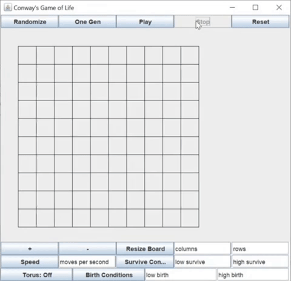

Download .jar file here

Rules
- At any given moment, each cell is either in a state of live or dead
- Each generation, the cell's state will be updated based on its nearest neighbors
- A live cell will survive if two or three of its neighbors survive
- A dead cell becomes live if it has three live neighbors
- All other live cells will die and all other dead cells will stay dead
How to Use
- Randomize - generates random board of live and dead cells
- One Gen - will increase the game by one generation
- Play/Stop - starts or stops iterating through many generations
- Reset - resets the game board
Options
- + / - : Zoom In/Out
- Resize Board: will resize the gameboard to the desired number of columns and rows
- Speed: will set play speed to the desired moves per second
- Survive Conditions: sets the max and min number of live neighbors a live cell needs to survive
- Torus: will allow the gameboard to wrap vertically and horizontally
- Birth Conditions: sets the max and min number of live neighbors a dead cell needs to live